Chiedi all’IA
↓Copi il codice
↓Apri il terminale
↓Trovi gli errori
↓Ripeti tutto
La risposta è pronta. Il lavoro deve ancora iniziare.
LA TUA IA. IL TUO COMPUTER. UN SOLO BRIDGE.
Il sito da costruire. Il codice da sistemare. I file da organizzare.
Chiedilo alla tua IA. AI-PC Bridge le dà gli strumenti per lavorare sul tuo PC.
«Costruisci il mio sito.»
Dalla tua chatprogetto / sito

Di solito ricevi istruzioni e poi devi eseguirle tu. AI-PC Bridge collega la conversazione agli strumenti del computer, nei progetti e nelle cartelle che autorizzi.
La risposta è pronta. Il lavoro deve ancora iniziare.
Un flusso operativo con risultati verificabili e memoria di progetto.
PROGETTI REALI, NON SOLO RISPOSTE
QUANDO TI SERVE DAVVEROTre situazioni concrete per capire il valore del Bridge. Gli esempi descrivono un flusso possibile: configurazione, permessi e controllo dei risultati restano necessari.
Fai leggere il progetto, modificare i file, eseguire la build e controllare l’anteprima senza incollare manualmente ogni passaggio.
Esplora la demo ↗Individua il problema nei file autorizzati, applica una correzione e verifica con i test disponibili. Tu puoi revisionare le modifiche.
Vedi il percorso ↗Il Bridge registra attività, decisioni e checkpoint nel progetto: riprendi dal contesto salvato invece di ricominciare da zero.
Scopri la memoria ↗01 / COSA PUOI FARCI
UN PC. MOLTE POSSIBILITÀ.Il Bridge collega una richiesta agli strumenti del computer. Tu scegli il progetto, l’IA lavora entro i permessi concessi e puoi verificare quello che ha fatto.
Crea e modifica i file del progetto, avvia una preview locale e controlla il risultato nel browser.
«Prepara una pagina per il mio progetto.»FILE + COMANDI + DESKTOPLeggi codice e log autorizzati, correggi gli errori ed esegui i test disponibili nel progetto.
«Capisci perché questo test fallisce.»Esplora cartelle autorizzate, leggi documenti di testo e prepara nuove versioni senza copiare tutto nella chat.
«Crea una guida per avviare il progetto.»Controlla branch, modifiche e cronologia. Rivedi le differenze e salva il lavoro in commit tracciabili.
«Mostrami cosa è cambiato prima del commit.»Con il tuo consenso, l’IA può vedere lo schermo, aprire pagine, usare mouse e tastiera e verificare un’interfaccia reale.
«Apri il sito e controlla il menu.»USA IL DESKTOP CONDIVISOEsegui build, test e comandi. L’accesso completo e le connessioni ai tuoi server richiedono autorizzazioni aggiuntive; le operazioni rischiose restano soggette ad approvazione.
«Controlla lo stato del servizio sul mio server.»AMBIENTE E STRUMENTI DEVONO ESSERE CONFIGURATIAI-PC BRIDGE / MISSION CONTROL
STORIA INTERATTIVA · SIMULAZIONEGuarda come una richiesta può diventare un intervento operativo: il Bridge accede agli strumenti autorizzati, verifica la correzione e registra l'esito nel progetto. È una dimostrazione simulata, non un collegamento al tuo PC.
AI-PC: Sono pronto. Avvia la missione per vedere come procedo.
Sono pronto: avvia la missione per vedermi in azione.
$ bridge project inspect
In attesa del comando…La pagina sarà verificata durante la simulazione.
In attesa della missione.
02 / DAL DIRE AL FARE
PROVA IL RACCONTO INTERATTIVOScegli un esempio e segui i passaggi. Questa è una simulazione illustrativa: non esegue comandi sul tuo computer.
«Crea una pagina per il mio progetto e aprila nel browser.»
Passaggi e risultati raccolti nello stesso progetto.
03 / IL PROGETTO CONTINUA
OLTRE UNA SINGOLA CONVERSAZIONELa memoria di lavoro appartiene al progetto nel Bridge.
Obiettivi, note, attività e punti di ripresa vengono salvati sul PC. Una nuova conversazione può recuperare il contesto registrato, invece di chiederti di rispiegare tutto.
Il recupero riguarda ciò che è stato salvato. Non significa ricordare automaticamente ogni messaggio o garantire il cambio automatico delle chat su qualsiasi piattaforma.
Entra nella logica della plancia ↗04 / LA TUA CABINA DI REGIA
PROGETTI, ATTIVITÀ E IALa plancia raccoglie il lavoro per progetto: ciò che vuoi ottenere, ciò che è in corso e quello che serve per il prossimo passo.
Obiettivo: presentare il prodotto con esempi concreti.
Decisione: tenere separate demo e funzioni verificate.
Prossimo passo: controllare la navigazione su mobile.
SALVATO NEL CONTESTO DEL PROGETTOUn punto di accesso per più IA. Ogni collegamento richiede la sua configurazione.
Un progetto alla volta, un contesto preciso. Permessi, cartelle autorizzate e coordinamento dei lavori aiutano a separare le attività.
Il passaggio tra chat va gestito. Punti di ripresa e recupero del contesto sono distinti dalla rotazione automatica, che dipende dall’integrazione disponibile.
05 / POTERE, CON PERMESSO
DECIDI TU DOVE PUÒ ARRIVAREAutenticazione OAuth e permessi delimitano gli strumenti accessibili. Puoi interrompere o revocare l’accesso.
I comandi supportati possono usare la sandbox. Terminale completo e desktop richiedono un consenso specifico e operano con capacità più ampie.
Le operazioni classificate come rischiose richiedono approvazione. Log e risultati permettono di controllare ciò che è successo.
Memoria locale non significa IA sempre locale. Quando usi un provider esterno, i contenuti necessari alle richieste possono essere trasmessi a quel provider. Non inserire credenziali nella chat.
DAL PRIMO ACCESSO AL PRIMO RISULTATO
COME SI INIZIAAI-PC Bridge nasce per chi vuole trasformare un'idea in un risultato concreto, mantenendo il controllo degli strumenti e delle autorizzazioni.
Installa e configura il Bridge nell'ambiente supportato. Gli accessi vengono autorizzati dal proprietario.
Indica la cartella su cui lavorare e concedi soltanto gli strumenti necessari.
Avvia una richiesta dall'IA collegata, verifica i risultati e ritrova le attività nella memoria di progetto.
Disponibile come progetto in sviluppo per Ubuntu.
Il lancio commerciale e gli installer multipiattaforma non sono ancora disponibili.
Le possibilità sono ampie. Sapere cosa è pronto e cosa richiede configurazione conta altrettanto.
Questa pagina presenta AI-PC Bridge. Le animazioni e le schede sono esempi. Il Control Center reale è un’applicazione locale separata, con i tuoi progetti e le tue autorizzazioni.
Le operazioni su file e comandi possono lavorare in background. Il controllo desktop usa invece il tuo schermo, mouse e tastiera: va coordinato con il tuo utilizzo.
In questa verifica sono riusciti lettura e modifica di file, comandi, operazioni Git, apertura del sito in Firefox, screenshot e clic. Questo non certifica tutte le combinazioni di strumenti, sistemi operativi e provider.
Il progetto prevede continuità tra sessioni e punti di ripresa. L’apertura o la rotazione automatica di una chat dipende dalle funzioni supportate dal provider e va verificata per ciascuna integrazione. La memoria del Bridge non aumenta i limiti del servizio IA.
L’ambiente verificato è Ubuntu. Ogni provider ha requisiti di collegamento, disponibilità e limiti propri. Windows, macOS e altre integrazioni non sono dichiarati verificati in questa anteprima.
Questa anteprima non vende piani e non attiva servizi a pagamento. Gli eventuali costi del provider IA, delle API o dell’infrastruttura restano separati e devono essere valutati prima di attivarli.
LE IDEE NON MANCANO. FACCIAMOLE SUCCEDERE.
AI-PC Bridge è in sviluppo. Esplora gli esempi e scopri come si collega al tuo ambiente.
Nessuna iscrizione attiva. Nessun dato raccolto da moduli su questa pagina.